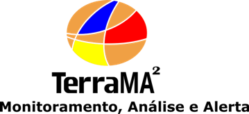
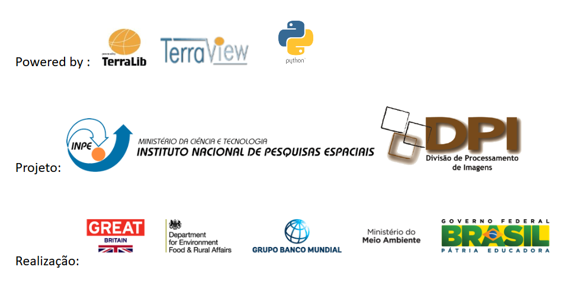

Introdução
Bem-vindo à plataforma TerraMA², um produto desenvolvido pelo Instituto Nacional de Pesquisas Espaciais – INPE desde 2006, permite o usuário desenvolver seu próprio sistema de monitoramento, análise e alerta de riscos ambientais. A geração 4 foi totalmente reestruturada dentro do projeto “Programa Cerrado”, uma iniciativa de cooperação entre os governos do Brasil e do Reino Unido, com apoio do Banco Mundial. O Ministério do Meio Ambiente (MMA), por meio de sua Secretaria de Mudanças Climáticas e Qualidade Ambiental (SMCQ), é o responsável pela coordenação geral do programa. O objetivo da iniciativa é contribuir para a mitigação da mudança do clima e para melhoria da gestão de recursos naturais no bioma Cerrado por meio do aprimoramento de políticas públicas e de práticas de produtores rurais. Um dos produtos desse projeto foi a construção do sistema de monitoramento de queimadas fazendo uso da plataforma TerraMA2. Paralelamente ao projeto estamos entregando a comunidade uma atualização da mesma plataforma com ferramentas para construir sistemas de monitoramento em diferentes aplicações.
As capacidades de aplicações permitem criar sistemas de monitoramento como qualidade do ar, qualidade da água, gasodutos, barragens de rejeito em área de mineração, incêndios florestais, movimentos de massa do tipo escorregamentos e corridas de lama, enchentes e estiagens, entre outras. O que mudou na geração 4 da plataforma TerraMA2 foi toda a base tecnológica. Novas tecnologias de desenvolvimento de softwares foram utilizadas de modo que as interfaces com o usuário estão apresentadas em aplicações web, podendo ser acessada, configurada e manipulada de qualquer ponto da internet.


Created with the Personal Edition of HelpNDoc: Easy CHM and documentation editor